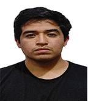

Desarrollo web
Interfaces y sistemas orientados a procesos concretos, utilizando tecnologías como HTML, CSS, JavaScript y PHP.
Hola, soy Oscar.
Ingeniería Informática · Desarrollo de software
Soy estudiante de la UNFV y desarrollo proyectos de aplicaciones web, automatización y asistentes conversacionales. Me interesa crear soluciones útiles y aprender de cada proyecto.

Me gusta entender una necesidad, ordenar las ideas y convertirlas en una solución que funcione.
Soy Oscar Mendoza Rodríguez, estudiante del 8.º ciclo de Ingeniería Informática en la Universidad Nacional Federico Villarreal.
Durante mi formación he desarrollado aplicaciones web, chatbots y herramientas de escritorio. Entre mis proyectos hay soluciones para automatizar trámites universitarios, integrar servicios de mensajería y trabajar con datos.
Busco fortalecer mi experiencia en equipos de desarrollo, mejorar mis prácticas de ingeniería de software y seguir construyendo proyectos que puedan usarse fuera del aula.
Estas son las áreas en las que he trabajado a través de mis proyectos. No son una lista de servicios comerciales, sino habilidades que continúo desarrollando.
Interfaces y sistemas orientados a procesos concretos, utilizando tecnologías como HTML, CSS, JavaScript y PHP.
Herramientas que simplifican tareas repetitivas, organizan información y facilitan el trabajo de los usuarios.
Experimentos e implementaciones con APIs, Webhooks y flujos conversacionales en plataformas de mensajería.
Tres proyectos que muestran diferentes formas de abordar un problema: diseñar un proceso, integrar una API y construir un asistente.
Una web orientada a simplificar la preparación de documentos para solicitar la carta de presentación de prácticas preprofesionales. Centraliza los archivos requeridos y los consolida en un PDF para su envío a la universidad.
Integración de un chatbot con la API de Meta y Webhooks, utilizando ngrok durante las pruebas. El objetivo fue trabajar con la recepción de eventos y la automatización de respuestas en una plataforma de mensajería.
Proyecto en Python orientado a interpretar comandos de voz y realizar interacciones desde una aplicación de consola. Me permitió explorar lógica de programación e interacción entre el usuario y el software.
Aplicaciones, prototipos e integraciones realizadas durante mi formación. Utiliza los filtros para explorar por tipo de proyecto.
Aplicación móvil que reúne recetas y una carta especializada en pescados y mariscos.
Ver repositorio ↗Aplicación desarrollada con PHP, JavaScript, CSS y una base de datos SQL para un entorno de gestión.
Repositorio no publicadoIntegración conversacional para Facebook Messenger usando la API de Meta y Webhooks.
Ver repositorio ↗Página web con asistente conversacional para resolver consultas sobre procesos de matrícula.
Ver repositorio ↗Programa para Windows que estima porosidad en alimentos y presenta márgenes definidos para su evaluación. No sustituye análisis especializados de seguridad alimentaria.
Repositorio no publicadoPrimera versión de mi portafolio personal, desarrollada para organizar mi perfil y proyectos.
Ver repositorio ↗No hay proyectos en esta categoría.
Prefiero mostrar en qué he utilizado una tecnología en lugar de asignarme un porcentaje arbitrario de dominio.
Creación de interfaces y lógica para aplicaciones web académicas y personales.
Desarrollo de soluciones y manejo de información estructurada en proyectos.
Conexión de servicios y experimentación con flujos basados en eventos y mensajería.
Control de versiones y organización de trabajo mediante repositorios de código.
Mi objetivo es dar el siguiente paso hacia un entorno profesional donde pueda seguir aprendiendo, participar en proyectos y aportar desde mi experiencia académica.
Ingeniería Informática · 8.º ciclo
Aplicaciones web, asistentes, automatización y sistemas de escritorio.
Colaborar en proyectos reales y fortalecer mis habilidades de ingeniería de software.
Me interesa conocer oportunidades de prácticas, desarrollo de software y colaboración tecnológica. Puedes escribirme directamente o revisar mis proyectos en GitHub.